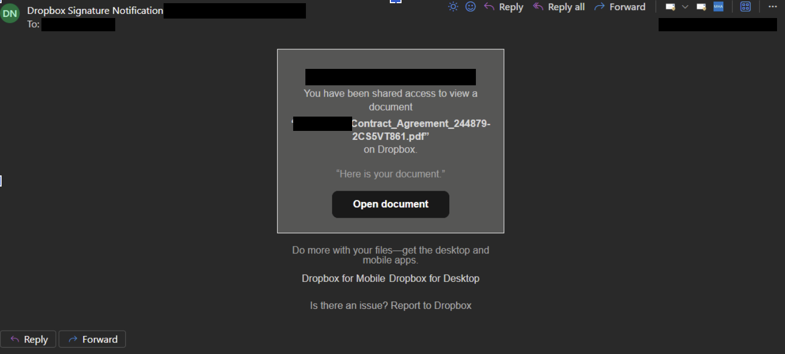

Case Study: Microsoft 365 Business Email Compromise
A Microsoft 365 account was compromised through a phishing campaign impersonating Dropbox and presenting a fake Microsoft sign-in page.
Initial containment involved blocking sign-in, revoking sessions and resetting the user's password. My further investigation revealed that the attacker had registered their own authenticator method and created an inbox rule to conceal correspondence with the CEO.
These persistence mechanisms remained after a subsequent password reset and account re-enablement.
I correlated Microsoft Entra sign-in logs, Microsoft Purview audit records and message trace results, and ran PowerShell commands built with AI assistance to query the account and mailbox. This let me reconstruct the incident, remove the attacker's persistence and report the exposure.
LureFake Dropbox email relayed through another business's tenant
Session theftPhishing page captures the sign-in and the session is replayed
PersistenceOwn authenticator app and a rule hiding the CEO's emails
ReconnaissanceThree days reading payroll, HR and the contract thread
ImpersonationThe CEO is sent a "voicemail" link from the user's account
Key findings and outcomes
Identified an attacker-controlled authentication method that remained registered.
Found an inbox rule concealing the CEO's replies.
Confirmed token replay: the attacker reused the user's own session from a different machine two minutes after they signed in.
Reconstructed the attacker's activity across multiple days.
Recovered a deleted impersonation email using Purview.
Analysed the phishing email headers and identified two other businesses whose Microsoft 365 mail infrastructure the attacker was abusing to relay phishing, then organised reaching out to both.
Linked the phishing email to the attacker through its headers: the server that sent the lure later accessed the mailbox and sent the impersonation email.
Identified 130 accessed emails and reported the findings to the CEO.
Traced the original phishing email and searched the entire tenant for similar sender addresses and subject lines.
Confirmed across the tenant that no other user received the lure or signed in from attacker infrastructure.
Timeline
Day 1 is the day the phishing email arrived. Times are local.
AttackerUser or initial responseMy investigation
Day 1
Two "shared file" phishing emails arrive, the second a "Re:" follow-up 72 seconds laterSent from a US server, then relayed and signed by another business's Microsoft 365 tenant, so it passed SPF, DKIM and DMARC and was rated spam confidence level 1, meaning not spam. The sender name, "Dropbox Signature Notification", and the subject are padded with invisible characters to dodge filters, and the lure leads to a fake Microsoft 365 sign-in page.

The lure, redacted. A fake Dropbox notification sharing a "contract agreement", sent from a real address at another business.Initial access
Wrong-password attempts from hosting and VPN infrastructureError 50126 from IPs in Sydney and Chicago, two minutes apart.
User's self-service password reset finishes
User registers Microsoft Authenticator on their phoneFour minutes after the reset. This is the user's own, legitimate method.
Sign-in from the attacker's Chicago IP gets error 5007450074 means the password was correct and the sign-in stopped at the MFA step. A wrong password gives 50126, as at 3:07pm. So 12 minutes after the reset, the attacker already had the new password, captured through the phishing page.
User signs in on their phone, starting a new sessionSession ID 0099d6ea…
The same session appears on the attacker's Windows machineSame session ID, now on Chrome for Windows from the attacker's Sydney IP. Token replay: the attacker reused the session the user had just created, so MFA was already satisfied. This is the first confirmed attacker access.Initial access
User emails the CEO saying they can't open the "contract"The document they were trying to open was the phishing lure.
Attacker registers their own authenticator appTwo minutes after getting in. A software OATH token gives them a working second factor without the user's phone.PersistenceSurvived containment
Inbox rule "ww" hides the CEO's emailsCreated seven minutes after the user emailed the CEO. A top-priority rule marks every email from the CEO as read, moves it to the RSS Feeds folder and stops any other rule from running. Any further warnings from the CEO would never reach the user.PersistenceSurvived containment
Days 1 to 2
Attacker returns to Outlook on the web three timesAt 10:58pm, 3:04am and 8:50am, from the same Sydney IP.
Days 3 to 5
Attacker moves to US infrastructureNew sessions from Albuquerque, Dallas, Philadelphia, Ashburn and Jacksonville. The Albuquerque IP is a rented server, the same one that sent the phishing email on Day 1.
About 425 background token requests for search and Copilot failError 70044: the session had expired under the tenant's sign-in frequency policy. The attacker re-authenticated with their own authenticator app, which is what let them past that control.
Passes MFA with their authenticator app three timesDay 4 at 3:46pm, then Day 5 at 7:34am and 7:50am.
Reads the mailbox and keeps returning to the "contract" thread with the CEOOne minute after passing MFA. Payroll, pay reviews, HR, staff leave, the CEO's contract and client welfare correspondence.Reconnaissance
Drafts a reply in the same "contract" thread
Sends it to the CEO as the userThe attacker answered the CEO's "I never sent a contract" reply directly, using the user's real account and a genuine conversation to target the CEO next. The email asked the CEO to open a "voicemail" through a link.Impersonation
Sent copy moved to Deleted Items, then hard-deletedMoved, soft-deleted and hard-deleted in quick succession, so the user would never see it in Sent Items.Covering tracks
The CEO reports the email to usThey flagged it as unexpected behaviour from the user. The attacker's second attempt at a phish, this time aimed at the CEO, was what exposed them.
Sign-in blocked on the account40 minutes after the impersonation email was sent.
Sessions revoked and password resetThe attacker's authenticator app and inbox rule were still on the account.Attacker still held a working second factor
After day 5
My follow-up investigationCorrelated Entra ID sign-in logs, Purview audit records and message trace, and ran PowerShell commands built with AI assistance to map the attack.Removed the attacker's authenticator and every other MFA methodRemoved the hidden inbox ruleRecovered the deleted impersonation email in PurviewTraced the original phish through message traceIdentified two businesses whose Microsoft 365 mail flow was being abused to relay the phishing, and organised notifying themConfirmed no one else received the lure or signed in from attacker infrastructureReported the accessed emails to the CEO
MITRE ATT&CK mapping
Technique
What happened
T1566.002 Spearphishing Link
Fake Dropbox "contract" email linking to a Microsoft 365 sign-in page
T1557 Adversary-in-the-Middle
Phishing page relayed the user's sign-in and captured the new password
T1550.004 Web Session Cookie
The user's session reappeared on the attacker's machine with MFA already satisfied
T1098.005 Device Registration
Attacker registered their own authenticator app on the account
T1564.008 Email Hiding Rules
Rule "ww" moved the CEO's emails to RSS Feeds and marked them read
T1114.002 Remote Email Collection
Payroll, HR, contract and client welfare emails read over three days
T1534 Internal Spearphishing
"Voicemail" link sent to the CEO from the user's real account
Filtered by the attacker's session IDs to build the list of 130 accessed emails for the CEO.
How I used AI
I used Claude Opus 5.5 and Claude Sonnet 5.5 through our enterprise Microsoft 365 Copilot to suggest PowerShell commands and to review the logs I exported from Purview, Entra ID and message trace. It flagged the hidden inbox rule, the attacker's authenticator app, the deleted sent item and the invisible characters in the phishing email.
I treated its output as leads, not conclusions. I checked the error codes and session IDs in the raw sign-in logs, recovered the deleted email myself in Purview, and read the phishing email's headers directly.